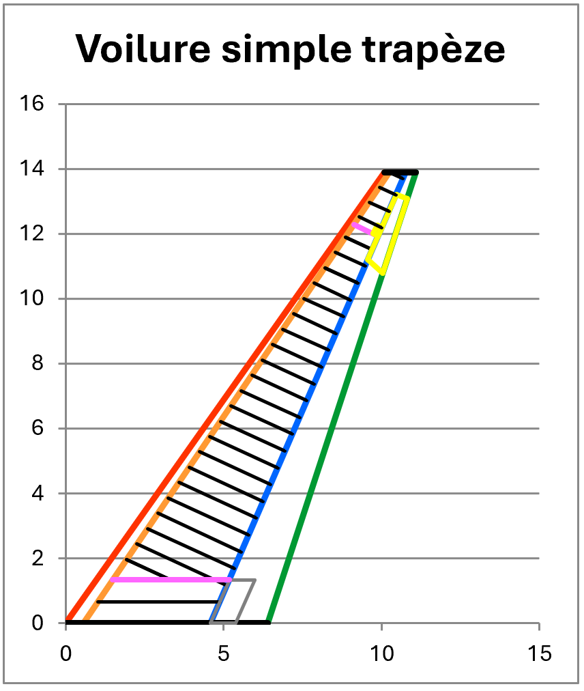

Architecture & prédimensionnement de voilure — Jet d’affaires
Méthodologie d'avant projet : analyse comparative → règles empiriques → logigramme → outil Excel,
pour passer d’une forme en plan à une voilure cohérente.
Phase amontStructuresOutils (Excel)
Problème
Comment générer une voilure techniquement crédible à partir d’une forme en plan, en intégrant dès l’amont
structure, systèmes, maintenance et contraintes d’exploitation, sans complexité inutile ?

Architecture interne de la voilure – prédimensionnement et intégration structurelle.
Démarche
De l’existant vers une méthode exploitable
Sélection d’un panel de jets d’affaires modernes (données publiques).
Analyse géométrique (plans 3 vues, écorchés) et extraction de tendances.
Formalisation d’un logigramme : ordre des décisions (longerons, nervures, train, gouvernes).
Implémentation progressive dans un outil Excel semi-automatisé.